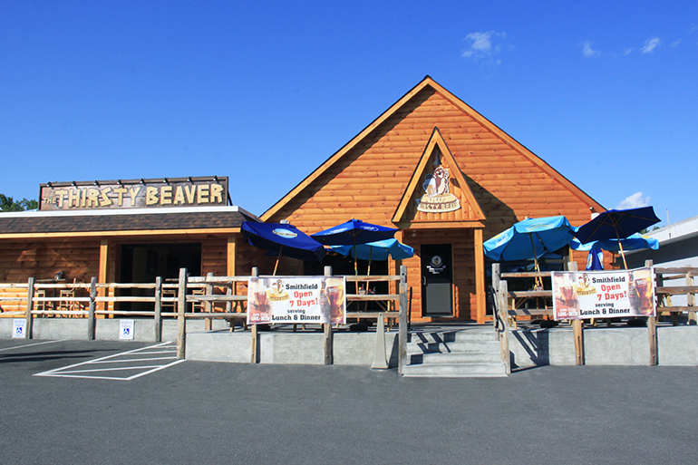
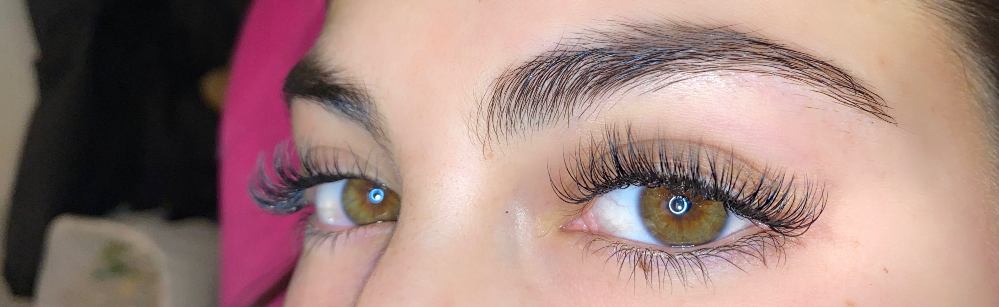

My name is Gia Bonamino. I am a junior standing student at the Universtiy of Rhode Island where I major in Business Management and am currently pursuing a minor in Computer Science.
I am from Cranston, Rhode Island which means I am only about 30 minutes away from home. Some of my interests/hobbies include working out, going shopping, traveling, and hanging out with family and friends.
When I am not doing these things, you can most likely find me at work.
On the weekends, I waitress at a bar in my home town called The Thirsty Beaver and during the week I am a certified eyelash technician.
Although working two jobs in college is difficult, I enjoy making money and staying busy in my life.
After college, I would like to have a job in the Business Management field and I would also like to travel more of the world.
Some places that I have already been too are; Switzerland , Italy , France ,Spain , and Monaco, etc.
Traveling is one of my biggest passions and hopefully I am able to travel more places later in life.
|
|
 | |
 |